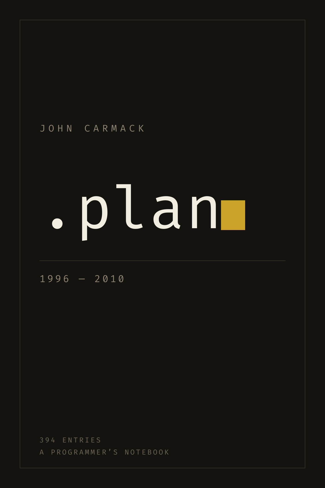
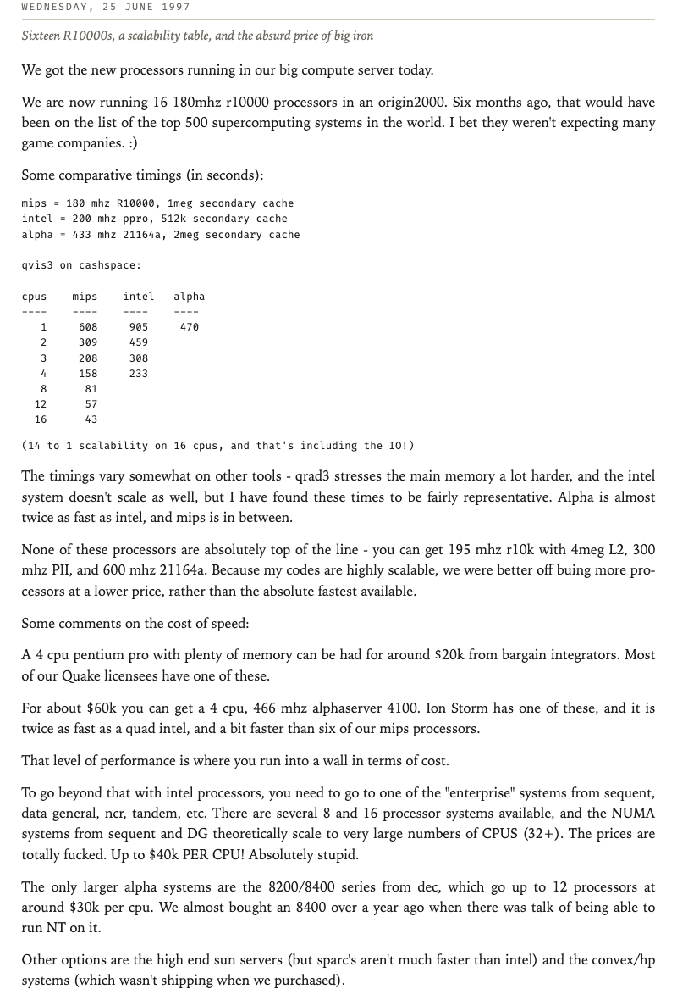

Fourteen years of a programmer's working notes, typeset as a book. 1996–2010.

Before blogs, Unix carried a small courtesy. You left a plain text file
called .plan in your home directory, and anyone on the internet
could read it by running finger against your address. It was
meant for “back at 3pm” notes.
From 1996 onward, John Carmack used his as a working notebook. It begins as terse bug lists, a line for each thing fixed and a line for each thing still broken, and grows into the most detailed public record we have of how a first-rate programmer actually thinks.
All 394 surviving entries are collected here in order, one chapter per year. Each day carries a short note saying what it covers, so you can dip in anywhere rather than reading front to back.
John Carmack is the programmer who made 3D games run on ordinary computers. At id Software he wrote the engines behind Wolfenstein 3D, DOOM and Quake, work that took real-time 3D graphics off expensive workstations and onto the PC sitting in someone's bedroom.
He also gave most of it away. The source code to nearly every engine he wrote was released publicly once the games had had their commercial run — which is why DOOM now famously runs on cash registers, calculators and pregnancy tests. The same instinct runs through these notes: he explains what he tried, what it cost, and what turned out to be wrong.
The years in gold are the years this book covers.

Open this page on the device and tap Download. Choose Open in Books when asked. It appears in your library and syncs to your other Apple devices.
Download the file, then email it to your Send to Kindle address as an attachment. Amazon converts it and it shows up on the device.
Apple Books on a Mac opens it directly. On Windows or Linux, use a free reader such as Calibre or Thorium.